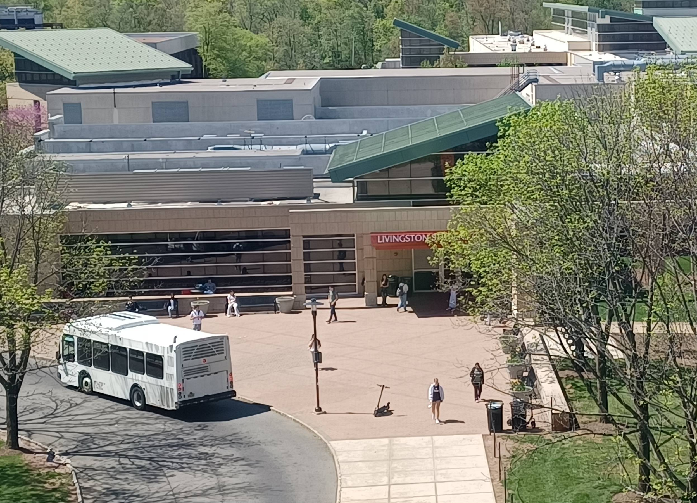

The Alex Library 1st Floor Bathroom

Candid pictures taken day of.
by Robin Luo.
The Archibald S. Alexander Library, otherwise known as the Alex Library, houses one primary bathroom with 4 stalls on the first floor. Located just past the circulation desk, we find a filtered water bottle refilling station, flanked by both the men’s and women’s restrooms. Full disclosure, all bathroom reviews located on this page will be exclusively for the women’s room, as I do not currently possess the clearance for the men’s room. Please find my full findings below, including bathroom statistics and explanations for each category:
Date Reviewed: April 8, 2025
Time Reviewed: 11:40 PM
Weather Outside: 35℉, clear skies, slight wind
Cleanliness ★★★★☆
Cleanliness is ranked based on upkeep, debris on the ground, excessive water on the counter, litter, etc. Today’s cleanliness was pretty good, considering the high amount of traffic. There were small pieces of toilet paper on the floor (as to be expected), but nothing major.
Condition ★★★☆☆
This bathroom is not the newest, but it’s fairly decent in terms of quality. Points have been taken off for some broken floor tiles.
Smell ★★★☆☆
Not the worst, not the best. Pretty standard multi-stall bathroom urine and feces smell. This particular bathroom gets a lot of traffic during exam weeks. We’ll give it 3 stars for doing well despite the dire circumstances. I’ve seen it at a 1 star smell rating on a weekend during finals week, and that was diabolical.
Location ★★★☆☆
Location is ranked based on privacy, ease of access, and locatability. I am a particularly directionally challenged person, and it wasn’t too bad of a find. Points taken off for privacy, as it is a multi-stall bathroom with a lot of foot traffic passing just outside. Lines are fairly common especially during peak hours, so don’t expect to get quality alone time here.
Overall Vibes ★★★☆☆
Overall vibes include lightning, acoustics, decorations, and all the qualitative data not found in the above factors. I would not say this is my favorite bathroom. That one might be reserved for the Food Science and Nutritional Sciences Building bathroom that features beautiful countertops, natural lightning, and a shower. This one has been smelly every time I’ve used it, and its feng shui leaves something to be desired.
Coat Hooks? ✔
Very often the first thing I look for when entering a stall. Didn’t have a jacket with me on this particular occasion, but it always comes in clutch when needed.
Sanitary Pads/Tampons Offered? ✔
This bathroom gets extra points for being one of the only Aunt Flow stations at Rutgers! Patrons are able to grab any amount of sanitary napkins or tampons as needed, completely for free. These are a godsend sometimes, and kudos for not making us sign up or put in our emails or something dumb. This machine is 100% mechanical with no pay wall.
Seat Covers? ✘
No seat covers! Not my personal biggest grievance, I typically just fashion my own, but it is a welcome and thoughtful addition to any public restroom.
Safety Posters? ✘
By safety posters, I refer to the posters displaying various university resources, including the suicide hotline, sexual trauma hotline, and other mental health lifelines. Safety posters should be the bare minimum! It’s honestly disheartening that a bathroom as widely used as this one does not have them. I think we all have either needed these resources or know someone who would appreciate these resources. Honestly, I might just print out and tape up my own if I have the time.
Narcan? ✘
A free Narcan box is not a requirement, but always greatly appreciated. This bathroom does not have one.
Mirror? ✔
Mirrors are always cool to check out the day’s fit. Unfortunately, every time I have been in this bathroom, I’ve had on a not particularly great exam week outfit. Today’s was a grey hoodie and cargo pants.
Other Notes: No good surfaces to put your phone down while the same short form content video plays over and over.
The Medium Production Room
I think I’d get blacklisted if I showed an actual image of our secret office, so here’s a great picture of the Livingston Student Center!
by Robin Luo.
The Medium production room is a small, converted closet located within 90.3 FM the Core’s office and broadcasting space. They took pity on us years ago, when we lost our Livingston Campus office. The production room features zero windows, zero ventilation, and zero airflow. I’m not even sure if we’re legally allowed to be here. Nonetheless, we persevere. Two of the room’s walls are bordered by long tables. There are approximately 8 or 9 wheely chairs of varying quality and size. You can barely see the floor during meetings. About 1/6th of the space is taken up by a large cart full of low quality laptops. I doubt any of these are actually usable for the very cool and mysterious work we complete every Monday to ensure the paper is printed in time. Please find my full findings below for this room, including statistics and explanations for each category:
Date Reviewed: April 7, 2025
Time Reviewed: 9:30 PM
Weather Outside: 43℉, clear skies, very windy
Cleanliness ★★★★★
Our office is super clean, guys! We definitely don’t leave stacks of old papers literally everywhere. We are so professional and clean.
Condition ★★★★★
There has never been another office in existence in such peak condition as ours. Trust.
Smell ★★★★★
The smell in the office is of hard work, dedication, and sandalwood. No one even brought a candle (obvious fire hazard) or anything, it just smells awesome naturally.
Location ★★★★★
Everyone loves the Livingston Campus Student Center. No one has ever had a single complaint about the Livingston Campus Student Center.
Overall Vibes ★★★★★
Overall vibes could not be improved even if we tried. We have wall to wall hand-drawn posters made by our dedicated staff of years and years past, a huge pride flag, and millions of jokes contained within the stacks and stacks of backlogs that definitely are NOT crowding the room. There’s a whole drawer containing weird stuff the old AV department left behind. Who wouldn’t love it?
Coat Hooks? ✔
I’m going to count the chair backs as coat hooks! Good enough.
Sanitary Pads/Tampons Offered? ❓
To be fair, the Medium production room is not the first place I’d look for tampons. There’s a non-zero chance they’re somewhere in here though! I just haven’t bothered to start looking.
Seat Covers? ✘
No seat covers! That’s probably fine. I also wouldn’t be looking for those in here anyways.
Safety Posters? ✘
Never thought about safety posters for the production room, but maybe we could look into getting those in here.
Narcan? ❓
Narcan in the Medium production room is not a likely scenario, but I wouldn’t totally rule it out. I believe there’s Narcan in the Core office outside, so that kind of counts!
Mirror? ✘
I think a mirror would alter the vibe of the room, honestly. I do not want to know what I look like at midnight after several hours of staring at my laptop and spell checking articles by hand. That’s between me, God, and the other editors.
Other Notes: God I’m going to miss this when I graduate.